Terrenos en venta en Morales
Hay 28 anuncios de terrenos, lotes, chacras y casas en Morales (San Martín). El precio mediano publicado es S/ 90,000, con anuncios desde S/ 100 hasta S/ 1,200,000. Los tamaños van de 120 m² a 6,7 ha (mediana 663 m²). 8 mencionan título o partida en su descripción (según el vendedor; no verificado).
Ver en el mapa y filtrar Cómo comprar seguro
Anuncios
 Se vende un terreno de 120M2 en el sector Santa Bárbara, Banda de Shilcayo
Se vende un terreno de 120M2 en el sector Santa Bárbara, Banda de Shilcayo
S/ 75,000 · 120 m² · La Banda de Shilcayo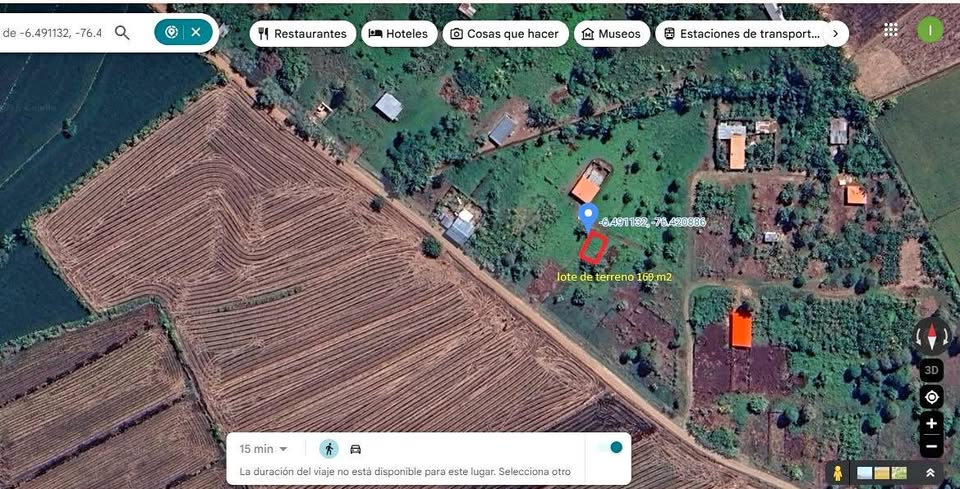
Vendo lote de terreno en Morales Tarapoto
S/ 25,000 · 169 m² · Morales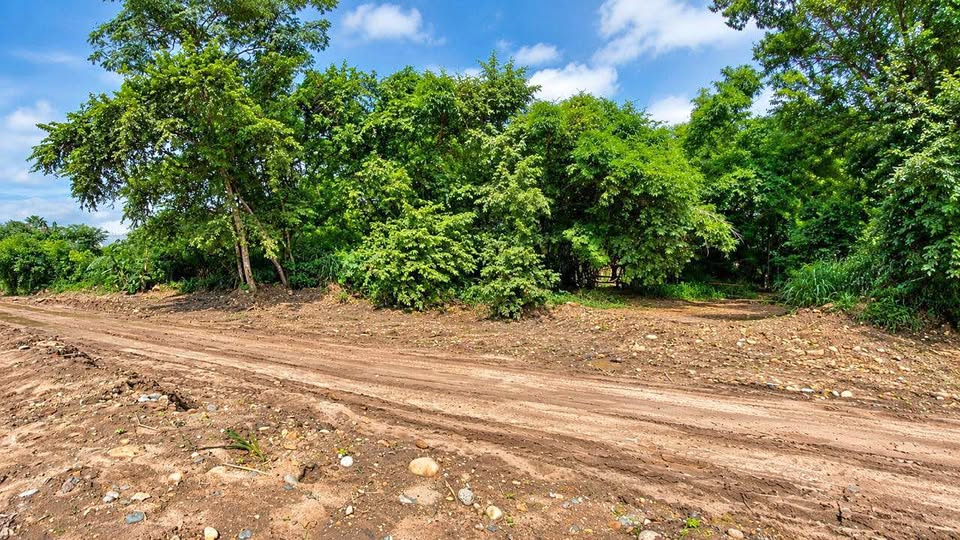
Terreno 954m2 junto al río Cumbaza - Morales/Tarapoto
S/ 429,638 · 954 m² · Cumbaza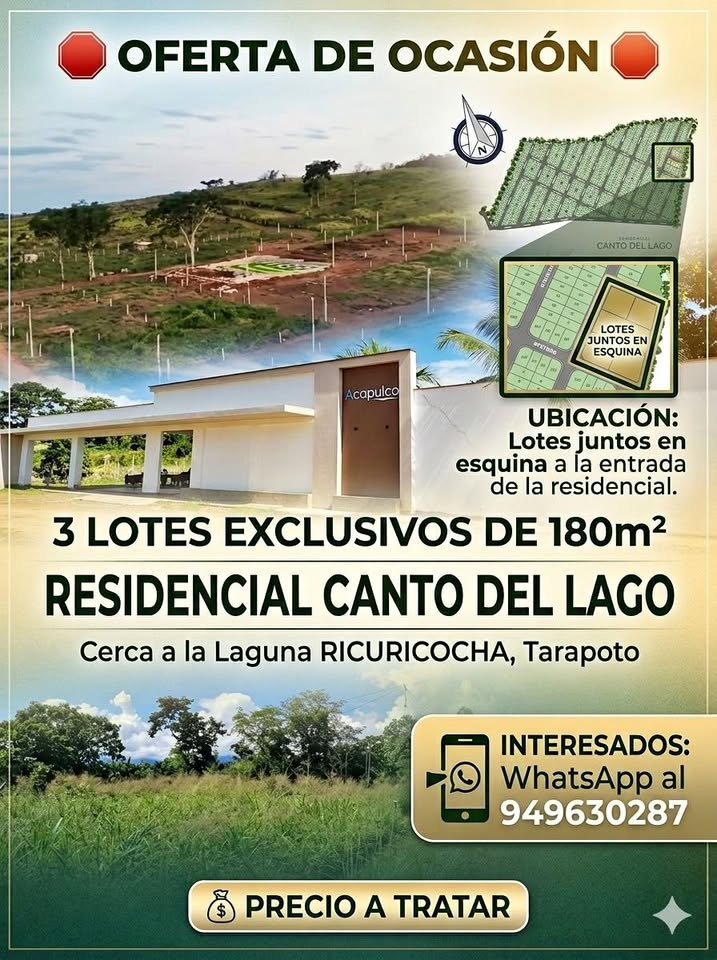
Lotes de Terreno
S/ 12,000 · Morales SE VENDE TERRENO EN MORALES
SE VENDE TERRENO EN MORALES
S/ 120,000 · Morales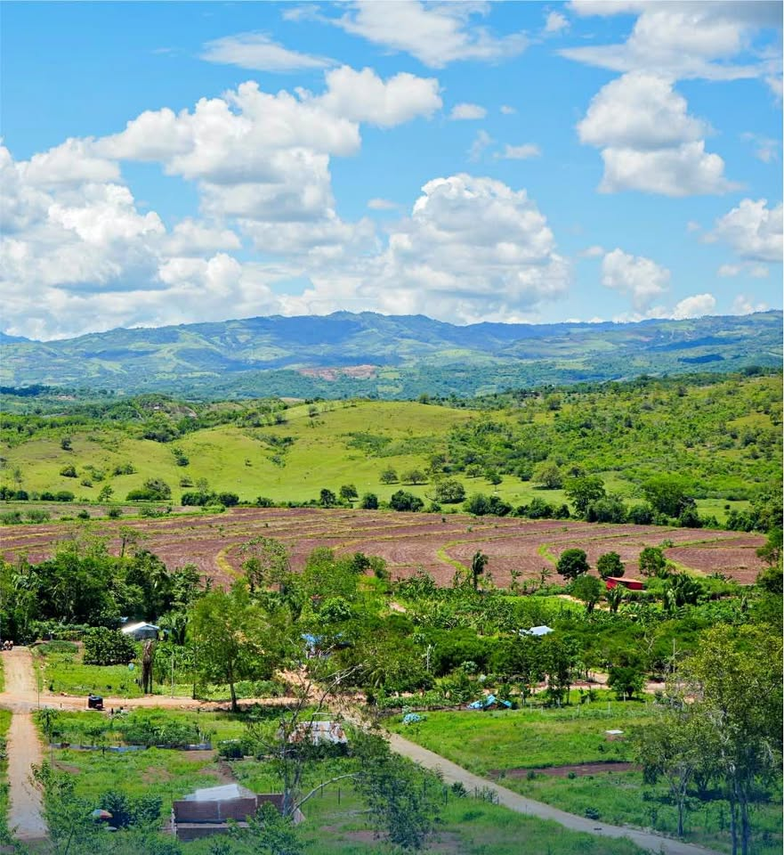
Terreno de 590 metros cuadrados
S/ 40,000 · 590 m² · Morales Terreno Venta📍Cerca a Minsa y cerca a Fonavi
Terreno Venta📍Cerca a Minsa y cerca a Fonavi
S/ 79,000 · Morales- 𝐕𝐄𝐍𝐃𝐎 𝐓𝐄𝐑𝐑𝐄𝐍𝐎 EN MORALES (A.T 𝟓,𝟎𝟎𝟎 𝐌𝟐)
S/ 490,000 · 1,7 ha · Coordenadas del anuncio 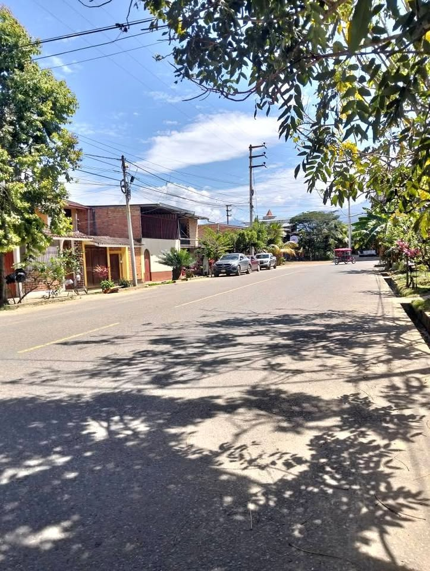
𝙏𝙚𝙧𝙧𝙚𝙣𝙤 𝙑𝙚𝙣𝙩𝙖 𝙭 𝙃𝙤𝙨𝙥𝙞𝙩𝙖𝙡 𝙈𝙞𝙣𝙨𝙖 𝙂𝙧𝙖𝙣 𝙤𝙥𝙤𝙧𝙩𝙪𝙣𝙞𝙙𝙖𝙙(1
S/ 79,000 · 140 m² · Morales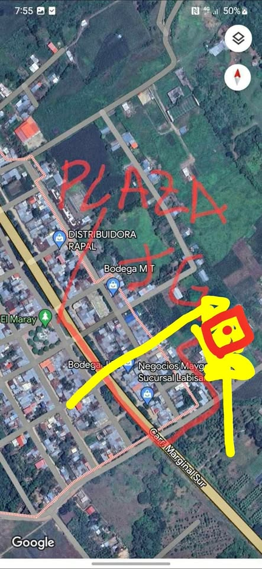
Terreno en venta
S/ 100 · Morales Terreno de 18x3.30 excelente ubicacion
Terreno de 18x3.30 excelente ubicacion
S/ 90,000 · Morales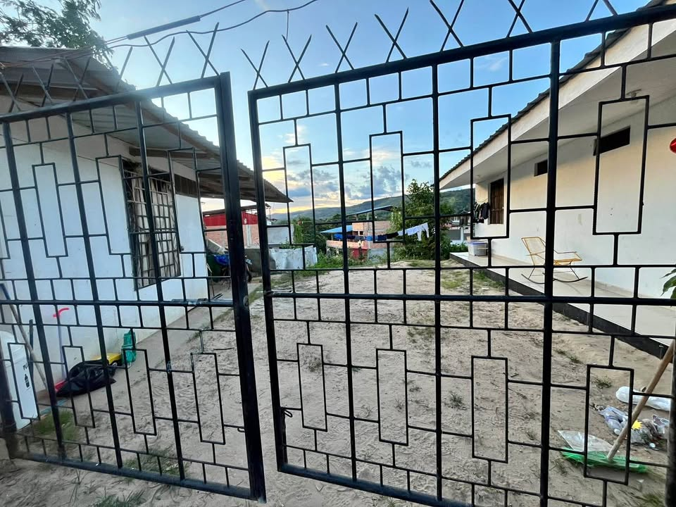
VENTA DE TERRENO
S/ 320,000 · 663 m² · Morales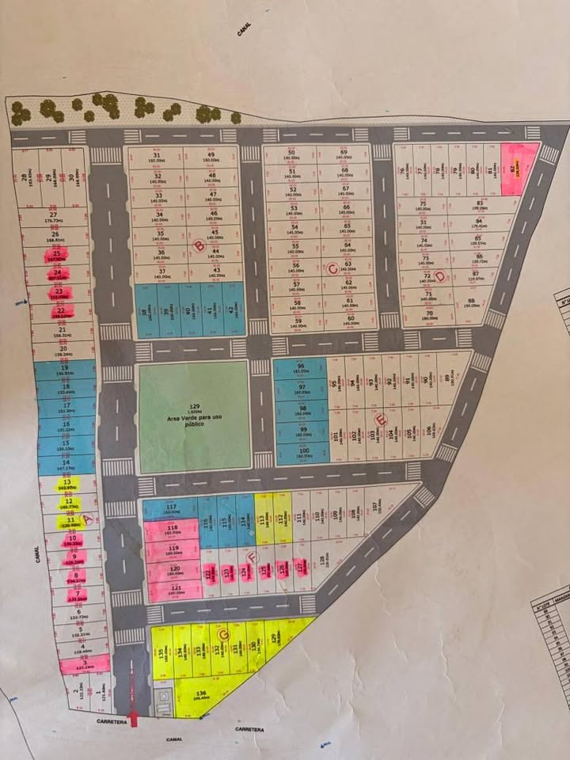
De terreno en preventa en Mayo Pampa
S/ 25,000 · 140 m² · Morales Terreno en el centro del Distrito de Morales
Terreno en el centro del Distrito de Morales
S/ 90,000 · Morales Terreno en pleno centro de Morales listo para transferir
Terreno en pleno centro de Morales listo para transferir
S/ 90,000 · Morales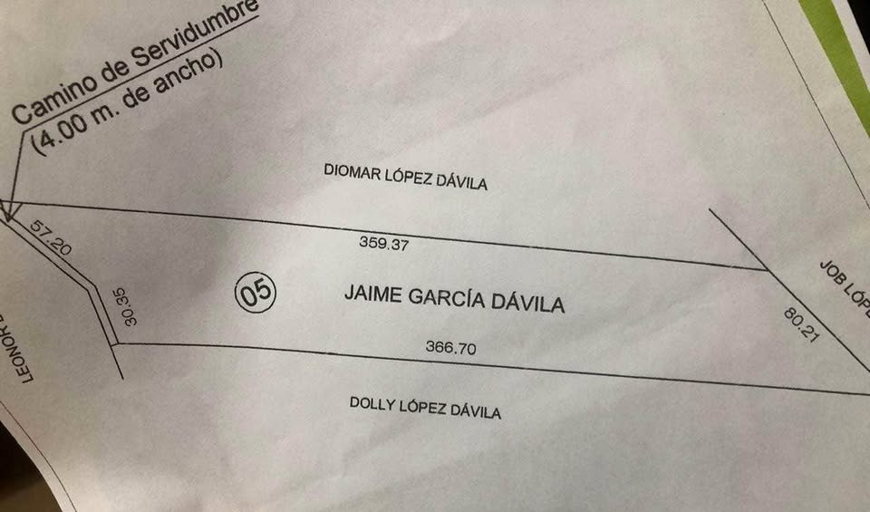
Venta de terreno es tu oportunidad de comprar y sacar provecho
S/ 120,000 · 1 ha · Morales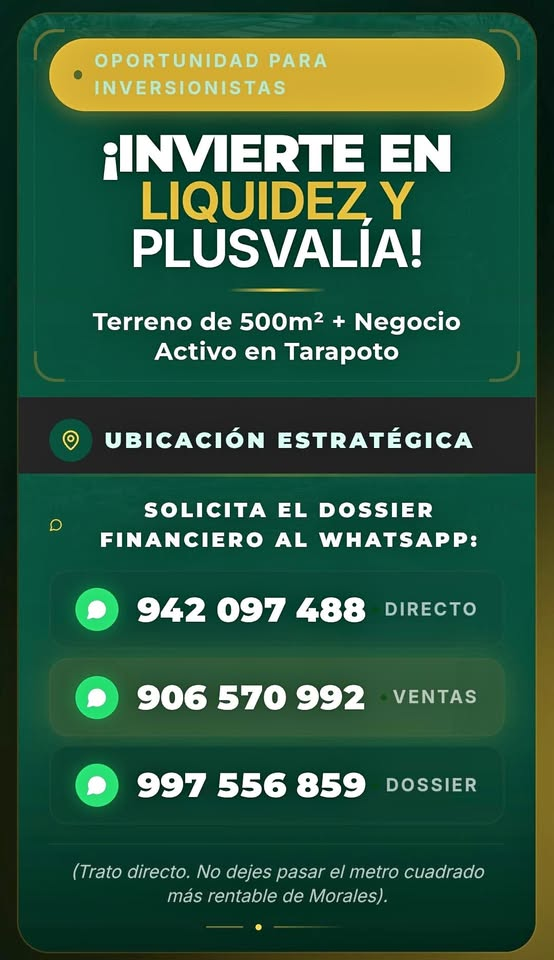
Vendo Terreno en Tarapoto 500 m2 con negocio en actividad
S/ 850,000 · 500 m² · Morales 𝙑𝙀𝙉𝘿𝙊 𝙏𝙀𝙍𝙍𝙀𝙉𝙊 EN 𝙈𝘼𝙔𝙊𝙋𝘼𝙈𝙋𝘼 - 𝙈𝙊𝙍𝘼𝙇𝙀𝙎 (6.7 Has)
𝙑𝙀𝙉𝘿𝙊 𝙏𝙀𝙍𝙍𝙀𝙉𝙊 EN 𝙈𝘼𝙔𝙊𝙋𝘼𝙈𝙋𝘼 - 𝙈𝙊𝙍𝘼𝙇𝙀𝙎 (6.7 Has)
S/ 1,200,000 · 6,7 ha · Coordenadas del anuncio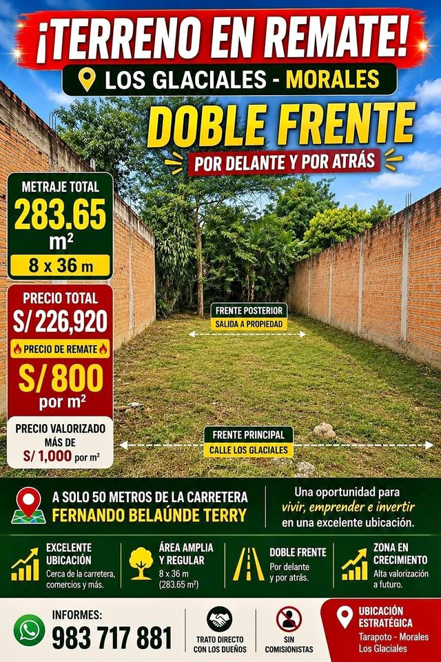
🔥 REMATE DE TERRENO 🔥 LOS GLACIALES MORALES – TARAPOTO 283.65
S/ 226,920 · 2,837 ha · Morales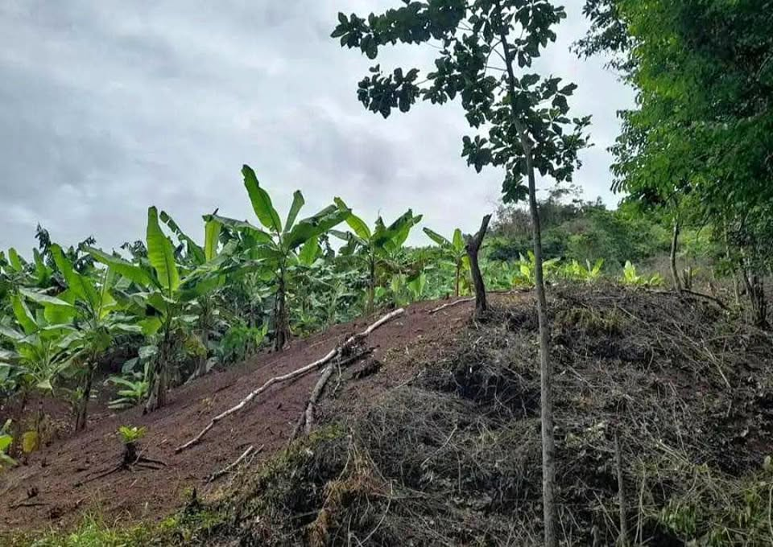
Venta de terreno
S/ 120,000 · Morales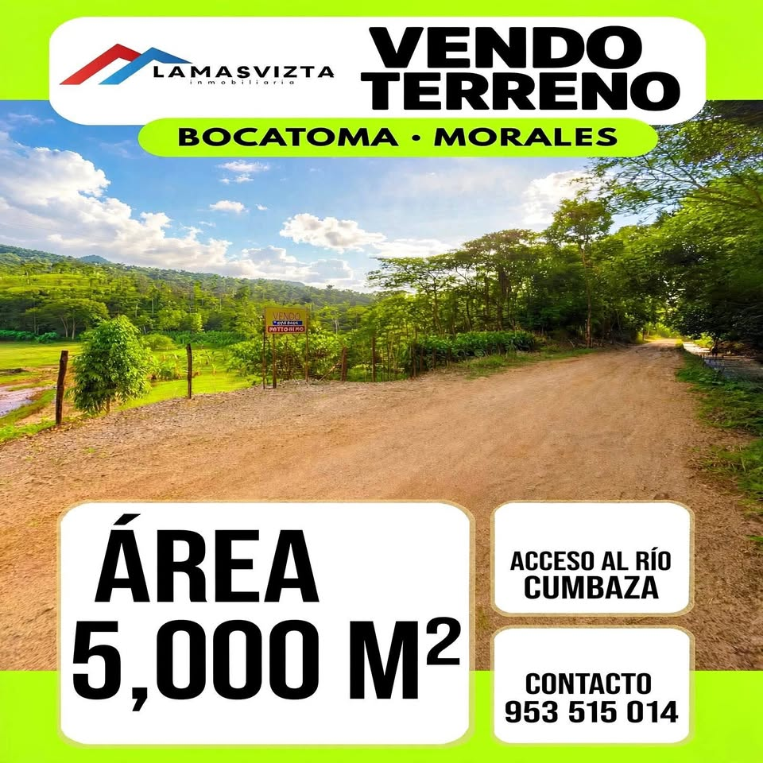
𝐕𝐄𝐍𝐃𝐎 𝐓𝐄𝐑𝐑𝐄𝐍𝐎 𝐂𝐎𝐍 𝐀𝐂𝐂𝐄𝐒𝐎 𝐀𝐋 𝐑𝐈́𝐎 𝐂𝐔𝐌𝐁𝐀𝐙𝐀(𝟓,𝟎𝟎𝟎 𝐌𝟐)
S/ 500,000 · 1,7 ha · Coordenadas del anuncio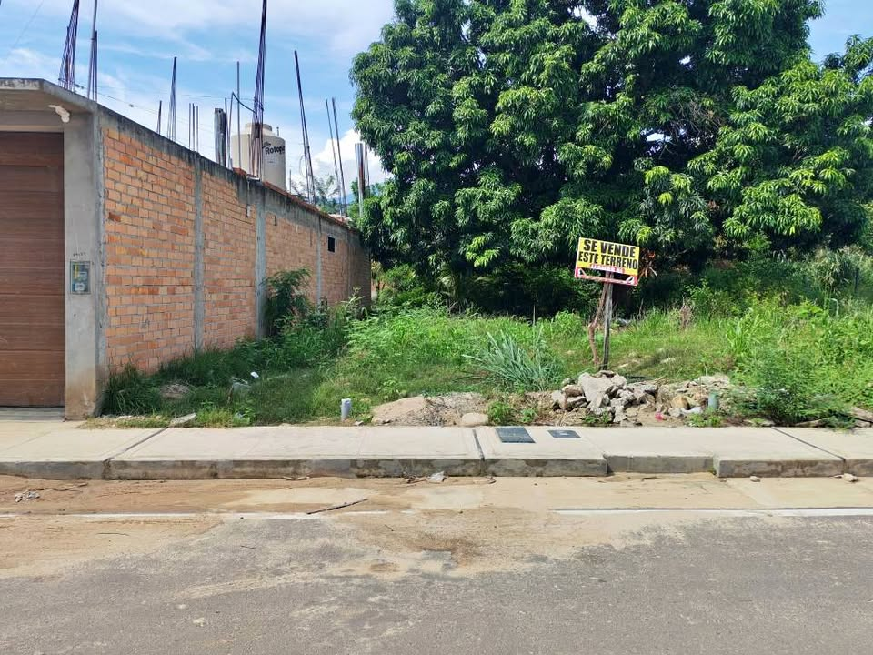
Remate de terreno en Morales a pocas cuadras de la plaza de Morales y cine estar
S/ 160,000 · 160 m² · Morales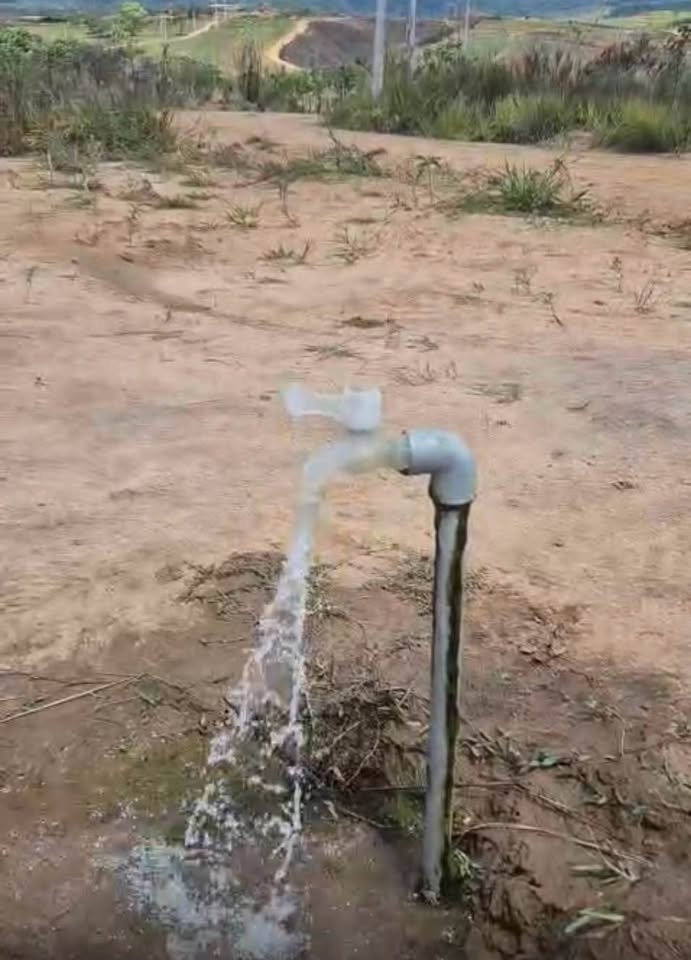
Remato lotes a solo 9mil soles en la banda de shilcayo
S/ 9,000 · La Banda de Shilcayo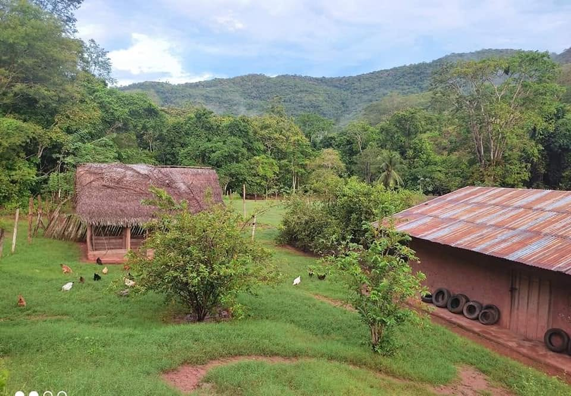
208 HECTÁREAS CON QUEBRADA EN VENTA - C.P MAMONAQUIHUA🌴😱💚👇🏻
S/ 7,000 · 208 ha · Mamonaquihua- Sin fotoSe vende un lote de 140mt2 de 7/ 20
S/ 55,000 · 140 m² · Morales - Sin foto𝐕𝐄𝐍𝐃𝐎 𝐓𝐄𝐑𝐑𝐄𝐍𝐎 | EN MORALES | 𝐒𝐄𝐑𝐕𝐈𝐂𝐈𝐎𝐒 𝐁𝐀𝐒𝐈𝐂𝐎S
S/ 37,000 · 1,563 ha · Aucaloma - Sin foto🚨 VENDO TERRENO EN TARAPOTO CUMBAZA 2.4 HECTÁREAS
~S/ 210,000 (según el anuncio) · 2,4 ha · Cumbaza - Sin foto🏕️ 𝙑𝙀𝙉𝘿𝙊 𝙏𝙀𝙍𝙍𝙀𝙉𝙊 | 𝙈𝘼𝙔𝙊𝙋𝘼𝙈𝙋𝘼 𝙈𝙊𝙍𝘼𝙇𝙀𝙎 (6.7 Hectáreas)
S/ 1,200,000 · 6,7 ha · Coordenadas del anuncio
Búsquedas relacionadas
Preguntas frecuentes
¿Cómo verifico en SUNARP un terreno en Morales?
Pide al vendedor el número de partida registral y consúltalo gratis en Conoce Aquí de SUNARP. Luego solicita la copia literal o el certificado registral para ver quién es el dueño y si hay cargas o gravámenes. Más pasos en nuestra guía Compra segura.
¿Los datos de los anuncios están verificados?
No. Precio, tamaño, ubicación y situación legal los escribe cada vendedor. CompraTerrenos.pe no los verifica: confirma todo antes de pagar.
¿Qué diferencia hay entre posesión y propiedad?
Una constancia o certificado de posesión no es un título de propiedad inscrito. Para ser propietario frente a terceros, el título debe estar inscrito en Registros Públicos. Ver Compra segura.
¿Puedo comprar desde el extranjero?
Sí, en general mediante un poder por escritura pública otorgado en el consulado. Revisa Comprar desde el extranjero (información general, no es asesoría legal).
Datos de anuncios públicos actualizados el 14 de octubre de 2026. La información la publica cada vendedor; CompraTerrenos.pe no la verifica.